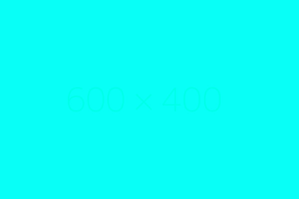

Stage 3: Data Generation with WBCMimicGen
Overview

Multiple approaches exist for generating manipulation data, including motion planning, reinforcement learning, MimicGen-based methods and so on. Motion planing is more suitable for atomic tasks implementation and implement the code manually for complex tasks is quite time-consuming, while reinforcement learning is more suitable for quite complex tasks (like extreme finegrained control, high dynamic tasks, etc), but reward shaping is also of difficulty. MimicGen-based methods leverages human intuition for complex contact-rich tasks while achieving the scale needed for effective learning. And we think it's better for long-horizon complex tasks. But we found teleoperating in the simulator easily leads to jerky motions, so we enhanced the MimicGen-based methods with Whole Body Control (WBC) - WBCMimicGen. What's more, WBCMimicGen also enables controlling the multi-arm with a mobile base together.
WBCMimicGen decomposes trajectories into object-centric subtasks, applies spatial and temporal transformations based on object relationships, and recombines them to generate diverse training scenarios while maintaining task validity and physical plausibility. Taking the canteen cleaning task as an example, from just 3-5 human demonstrations of plate manipulation, we can generate thousands of variants with different plate positions, approach angles, and cleaning sequences.
Data Collection
-
Task Demonstration
- Execute task demonstrations by tele-operating
- Record complete trajectories
- Validate data quality
-
Data Recording
- Robot states (joint angles, end-effector positions)
- Environmental observations (RGB images, depth maps, point clouds)
- Action commands (control signals, gripper states)
- Timestamps and metadata

A demo of collected data:
Task Decomposition and Annotation
Object-Centric Decomposition
Decompose complex tasks into object-centric subtasks. The kitchen task's example is as follows:
Stage 1: grasp bowl
- Start: Robot initial position
- Goal: Bowl stably grasped
Stage 2: place in microwave
- Start: Bowl grasped
- Goal: Bowl placed inside microwave
Stage 3: close microwave door
- Start: Bowl inside microwave
- Goal: Microwave door closed
Stage 1: grasp fork
- Start: Robot initial position
- Goal: Fork stably grasped
Stage 2: place fork
- Start: Fork stably grasped
- Goal: Fork placed in the blanket
Stage 3: grasp plate
- Start: Fork placed in the blanket
- Goal: Plate stably grasped
Stage 4: Drop plate
- Start: Plate stably grasped
- Goal: Drop above the left blanket
Stage 5: Place plate
- Start: Drop above the left blanket
- Goal: Plate placed in the blanket
Compare with MimicGen
WBCMimicGen extends the original MimicGen framework with several key improvements: Whole Body Control (WBC) integration for smoother teleoperation, support for mobile manipulators, enhanced trajectory optimization, and better handling of contact-rich manipulation tasks. These enhancements enable more robust sim-to-real transfer while maintaining the core benefits of object-centric task decomposition and data augmentation.
Data Generation of Mobile Manipulator
As a key advancement over standard MimicGen, WBCMimicGen can also be used to generate data for mobile manipulator. The following video shows the data generation of a mobile manipulator. In this task, we use ARX7 to pick up the toothpaste and put it in the cup and then put the cup near the wall:Camera on the robot's head.
Camera in the environment.
Large-scale Data Generation
With WBCMimicGen, we can generate large-scale data, enabling better policy training:
Dataset Management
Data Format
Using Zarr format for storage, supporting efficient parallel read/write:
Dataset structure:
dataset/
├── observations/
│ ├── rgb/ # RGB images
│ ├── depth/ # Depth maps
│ ├── point_cloud/ # Point cloud data
│ └── robot_state/ # Robot states
├── actions/ # Action sequences
├── rewards/ # Reward signals (if available)
└── metadata/ # Metadata
├── success/ # Success flags
├── subtask_labels/# Subtask annotations
└── timestamps/ # Timestamps
Code Reference
Data generation related code:
Teleoperation System:
- SpaceMouse control:
ManiUniCon/maniunicon/policies/spacemouse.py - Quest VR control:
ManiUniCon/maniunicon/policies/quest.py
Data Generation Scripts:
- Generation configuration:
manip-as-in-sim-suite/wbcmimic/config/mimicgen/generate_data.yaml - Parallel generation:
manip-as-in-sim-suite/wbcmimic/scripts/mimicgen/generate_dataset_parallel_all.py - Data replay:
manip-as-in-sim-suite/wbcmimic/scripts/mimicgen/replay_demos.py
Data Processing Tools:
- Zarr data management:
manip-as-in-sim-suite/wbcmimic/source/isaaclab_mimic/isaaclab_mimic/utils/datasets/ - Data visualization:
manip-as-in-sim-suite/wbcmimic/scripts/data_tools/draw_data_distribution.py
Next Steps
After completing large-scale data generation, we have obtained a rich training dataset. The next stage will use this data for imitation learning, training robot control policies, and ultimately deploying them in the real world for validation.